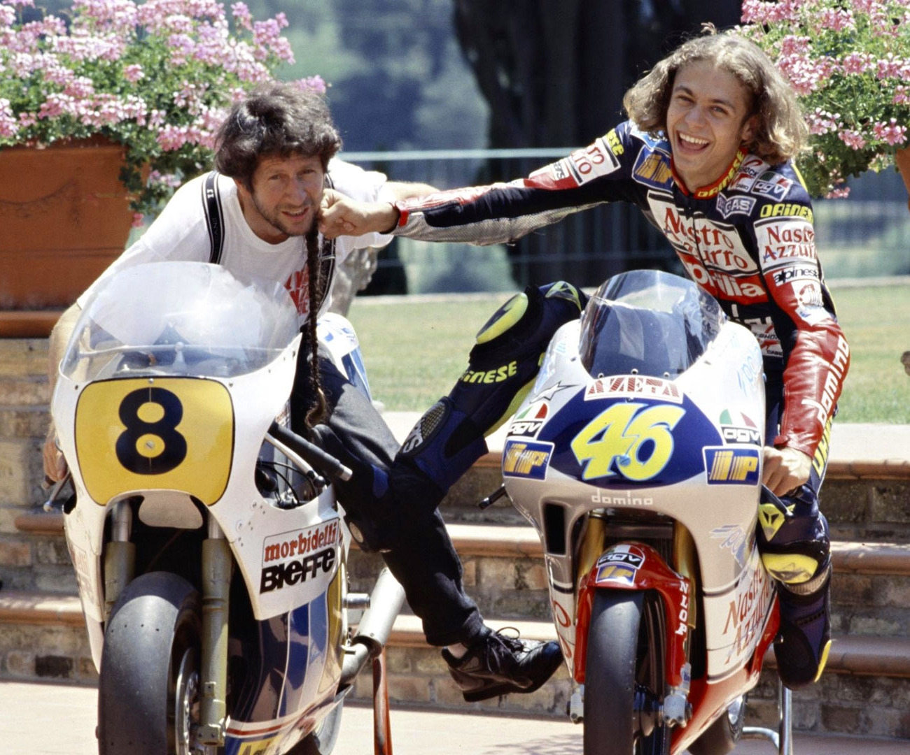

Biografia
Valentino Rossi (Urbino, 16 febbraio 1979) é un pilota motociclistico, pilota automobilistico e dirigente sportivo italiano.
Tra i piloti piú titolati del motociclismo, in virtú dei nove titoli mondiali conquistati (cinque dei quali vinti consecutivamente tra il 2001 e il 2005),él'unico pilota nella storia del motomondiale ad aver vinto il titolo in quattro classi differenti: 125 , 250 , 500 e MotoGP.
Figlio di Graziano Rossi, a sua volta pilota motociclistico a cavallo degli anni 1970 e 1980, e di Stefania, nasce a Urbino per poi crescere a Tavullia, in provincia di Pesaro e Urbino. Grazie alla passione motociclistica del padre, Valentino vive fin dal suo primo anno di vita a contatto con i motori:
ha sempre usato il 46 come numero di gara, anche nelle annate in cui ha avuto la possibilitá di sfoggiare l'1 di campione in carica, poiché questo era il numero precedentemente utilizzato nel motomondiale sia dal padre, sia successivamente da un pilota giapponese di cui era molto appassionato, Norifumi Abe; da quest'ultimo Rossi trasse inoltre spunto per il suo primo soprannome agli esordi in classe 125, Rossifumi,cui seguí Valentinik con il passaggio in classe 250 e infine The Doctor dopo il primo titolo conseguito nella classe regina.
Dopo la separazione dei suoi ha avuto un fratello minore da parte di madre, Luca Marini, divenuto anche lui un pilota motociclistico.
Il 4 marzo 2022 diventa padre di una bambina, avuta dalla compagna Francesca Sofia Novello.
